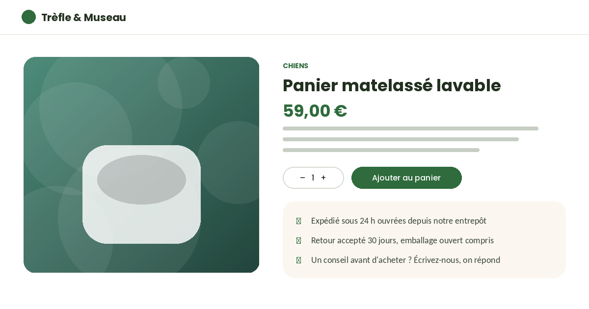

Thème Animalerie — version gratuite
Une boutique en ligne rassurante : vert naturel, terracotta, coins très arrondis.

Palette verte naturelle et terracotta, typographie ronde et lisible (Poppins et Nunito), coins très arrondis, ombres discrètes. Deux palettes livrées.
Un bandeau d'accueil et trois entrées de catégorie, plus une grille de produits mise en avant.
Les vues de website_sale sont stylées, pas remplacées : grille de produits, fiche produit, panier et tunnel de commande. La fiche produit reçoit un encart de promesse (expédition, retour, conseil).
Visuel arrondi, sélecteur de quantité et bouton d'ajout au panier retravaillés, avec l'encart de promesse sous le bloc de détails.

Palette, échelle typographique et composants. Les ratios de contraste indiqués sont ceux mesurés sur les couples de couleurs livrés par défaut.

Douze produits et trois catégories fictifs, avec des visuels générés, sont créés à l'installation. La marque « Trèfle & Museau » est inventée.
La page /notre-boutique est créée à l'application du thème.
La version pro ajoute le sélecteur par type d'animal, le comparateur, les avis notés, le guide de tailles, l'abonnement, les blocs conseils, les promotions et la page catégorie enrichie.
Édité par DYONYSOS — conseil et développement Odoo.
Support et questions avant achat :
welcome@dyonysos.fr
https://dyonysos.fr
Toutes les images de démonstration sont générées par programme (dégradés, formes géométriques, compositions typographiques) : aucune photographie ni illustration tierce n'est incluse. Les contenus de démonstration sont fictifs.